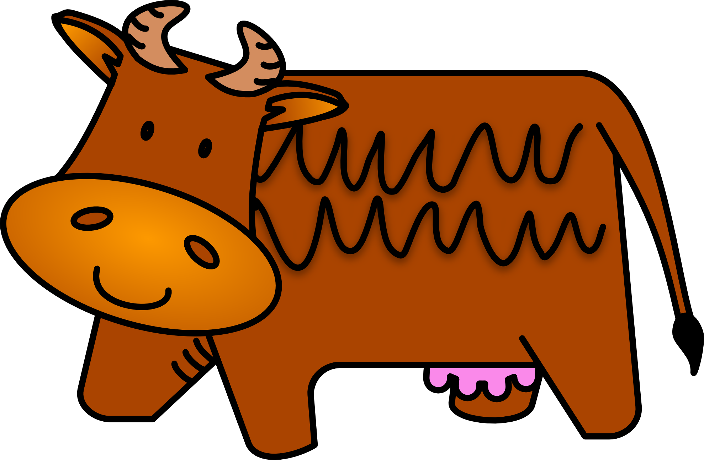

"How now brown cow" is a phrase used in elocution teaching to demonstrate rounded vowel sounds. Each "ow" sound in the phrase represents an individual diphthong. Although not in use today, the phrase "how now" is a greeting, short for "how say you now", and can be found in archaic literature, such as the plays of William Shakespeare. The use of the phrase "how now brown cow" in teaching elocution can be dated back to at least 1926.
“How now brown cow ?” asked the crow to the cow,
“Not so bad” he said to the lad
“But the weather’s dull”, commented the bull
“Can you come to the pen ?” asked the cockerel to the hen
“Now and then”, said the big, black hen (getting more and more hen – pecked)
“And me – how ?” asked the cat, rolling around on the mat
“Through the door” advised the boar,
“Make sure it doesn’t slam !” added the lamb
“Let’s have a bite to eat”, suggested the sheep sheepishly
“And sit on a log”, whoofed the dog
“You’re sat on my wig” complained the big pig–headed pig
“And squashed a fat spider”, his eyes growing wider
“That’s my tail you have bitten”, cried the horse to the kitten
“I’m feeling sick”, clucked the chick
“And a bit weird”, he said to the bird
“Let’s clean out this muck”, said the moorhen to the duck
“Make sure it’s all gone”, added the swan, sticking his neck into the beck
“And put down some hay – if you’re able”, neighed the horse from the stable
By the time they’d finished their tittle – tattle, the farmyard animals had forgotten the cattle. They’d been having so much fun – all the work didn’t get done. The milk was sour, the farm covered in flour. Cobwebs filled the barn and there was hay flying everywhere in the wind. The broken fence was not mended and even the gate looked shoddy and bended. The tiles on the roof remained broken. No – one had painted the cowshed for weeks – the farmyard was a real pig sty.
Click Here For More Info